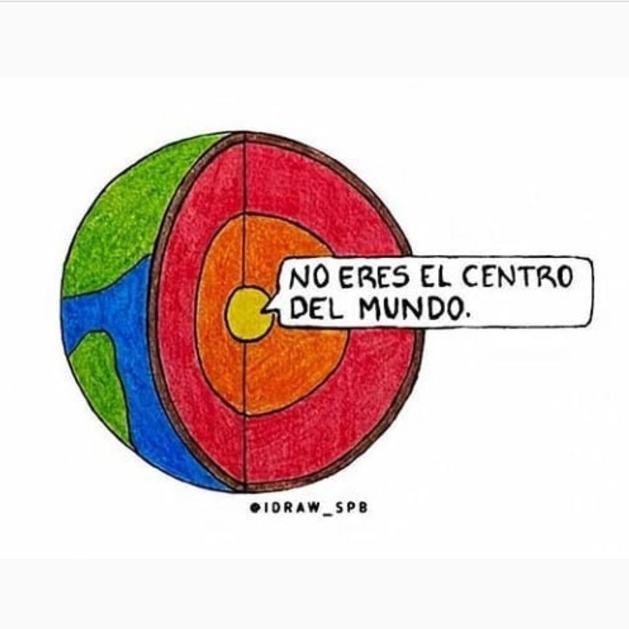

NO ERES EL CENTRO DEL MUNDO

Hoy he visto esta ilustración de @idraw_spb y me ha parecido realmente oportuna para reflexionar.
üî∏En muchas ocasiones caemos en afirmaciones del tipo "es que TODO lo malo me pasa a m√≠", "es que SIEMPRE me toca lo peor"
üîπEste tipo de afirmaciones catastrofistas y polarizadas nos atrapan en bucles de pensamiento muy negativos de los que nos cuesta mucho salir. .
üî∏Es importante identificarlas como tal, como DISTORSIONES, y entender que no todo lo malo nos pasa a nosotros, d√≠as malos los tenemos todos! Est√° claro que si hemos vivido muchas situaciones dif√≠ciles a lo largo de nuestra vida, sea f√°cil caer en este tipo de pensamientos. .
üëâüèªPero est√° en nuestra mano romper con este tipo de lenguaje y buscar estrategias diferentes que nos permitan avanzar, sin caer en un rol de v√≠ctima que puede ser muy paralizador. .
üëâüèªSi SIEMPRE me pasa TODO lo malo, directamente dejo de intentar cambiar, porque total, ¬°para qu√©!